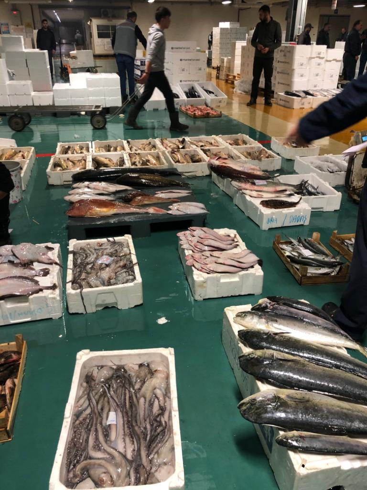
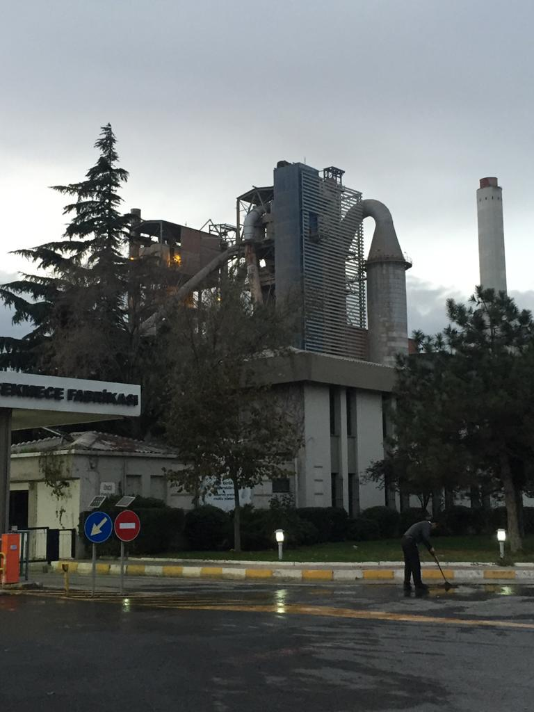

Fotoğraf: Istanbul Meyve-Sebze Hali.
Sağlıklı besin azınlık hale geliyor !
Istanbul Teknik Üniversitesi Çevre bilimleri Profesörü Dr. Süleyman ÖVEZ 28.11.2019 tarihinde verdiği röportajda aklımıza gelebilicek hertürlü temizlik maddesinin toprağa karıştığını dile getirdi. Süleyman ÖVEZ bu kimyasalların insanların günlük yaşamda yediği sebzelerin köklerine kadar girdiğini ve bazen ölümle bile sonuçlanabildiğini vurguladı. Prof. Dr. Süleyman ÖVEZ: " Mikrokirletici dediğimiz fabrika bacalrından çıkan birçok değişik yapılı kimyasal maddeler (azot, civa) suya ve toprağa karışıyor !". Süleyman ÖVEZ bir kez kirlenen suyun ve toprağın temizliğinin zor olduğunu ve uzun yıllar kirli kaldığını dile getirdi. "Birçok mikrokirletici dediğimiz değişik yapılı kimyasal maddeler suya ve toprağa karışıyor. Ağacın yaprağıda mikrokirletici içeriyor ama kısa zamanda dekompoze oluyor ama bu kimyasallar dekompoze olamıyor ve toprağa uzun süreli zararlar veriyor. Antibiyotiklerde başlı başına bir konu. Dışkı ve idrar yolu ile kanalizasyonlara giden antibiyotikler kanallardaki arıtmaların yetersizliğinden dolayı denizleri kirletiyor. Kanalizasyon sistemlerimiz bu parametredeki mikrokirleticileri arıtmak için kurulmamış, bu balıklarda ve diğer deniz canlılarında hermafrodit dediğimiz cinsiyet farklılıklarına sebep olan olay oluyor". Hermafrodit olayı dişi balığın erkek gibi, erkek balığında dişi gibi davranması olayıdır ve buda balıkların ürememesine ve balıkların neslinin tükenmesine yol açıyor.
Prof. Dr. Süleyman Övez: "Organiklerden inorganiklere kadar bi çok madde çevreyi kirletebilir, kirlenmiş su hastalıkları taşıma bakımından 1 numaralı hastalık yayıcı olarak geçer. "
Fotoğraf: Istanbul Gürpınar balık hali.
Istanbul Gürpınar su ürünleri balık halindeki balıkçıların 30.11.2019 tarihinde verdiği röportada cevre kirliliginin balıklar üzerindeki etkisinin balıklarının neslinin azalmasında bulduklarını açıkladılar. "Kanalizasyonlardan denize dökülen atıklar balıkların kimyasını bozuyor ve yiyen kişiye zararlar veriyor." Böyle bir olay daha önce Japonyanın minamata şehrinde yaşanmıştı. Kağıt endüstrisinden kazara denize çok miktarda civa ve metil karıştıktan sonra balıkçıların o denizden tuttukları balıkları yiyen insanlarda ani ölüm ve 1-2 yıl sonra baş gösteren hastalıklar olmuştu.
Günümüzde tarım sistemlerinde ve özelliklerinde endüstrideki gelişmelere bağlı olarak değişim ve etkiler olmuştur. Dünya nüfusunun hızla artması ve endüstrileşmeye bağlı çevre kirliliği gıda güvenliğini riske atan başlıca faktörlerdir. Son yıllarda önemli bi konu haline gelen gıda güvenliği, insalar için hayati bi konu haline gelmiş ve bu konudaki araştırmalar yoğunlaşmıştır. - Çevre kirliliği, insanında dahil olduğu tüm ekosistemi etkileyen ve toprak kirliliği gibi geri dönüşü olmayan kalıcı hasarlar veren bir olaydır. Verimli tarım alanlarının bazılarını kaybetmiş olan şehirlerde çevre kirliliğinden gelen gıda ve su kontaminantları, kimyasal atıklar ve ağır metaller gıda güvenliğini riske atmaktaktadır. kanser, astım, kalp damar hastalıkları ve alerjiler bu yol ile gelen başlıca hastalıklardır. Gıdaların sebep olduğu hastalıkların yaygınlaşması toplumları sosyal ve ekonomik açıdan etkilemiş ve önemli bi konu haline gelmiştir.
2012 yılından bu yana, Economist Intelligence Unit (EIU) tarafından geliştirilen “Küresel Gıda Güvenliği İndeksi”çalışmasının grafiği ülkelerin küresel kıda güvenliği indeksi performansları`nı göstermektedir.
Kaynak: Global Food Security Index,
http://foodsecurityindex.eiu.com/Index
Fotoğraf: Istanbul Büyükçekmece Çimento Fabrikası.
- POLİ AROMATİK HİDROKARBONLAR (Pulmonary arterial hypertension PAH): iki ya da daha fazla benzen halkasına sahip hidrofobik karakterli organik bileşiklerdir. PAH bileşikleri aliminyum üretimi, araç emisyonları, fosil yakıtlardan ve odun gibi organik maddelerin eksik yanması sonucu oluşmaktadır. Bu bileşikler (PAH) gıda örneklerinde, toprakta ve havada bulunmaktadır. PAH bileşiklerinin toksik ve kanserojenik oldukları tespit edilmiştir.
-POLİKLORLU DİBENZO-P-DİOKSİNLER ve POLİKLORLU DİBENZOFURANLAR (PCDD/F) : içten yanmalı otomobil motorlarının yanması, ev ve orman yangınları ve atıkların yakılması ile oluşan bileşenlerdir. Yüksek derecede kimyasal kararlılığa sahip bu bileşenler önemli çevre kirliliğinden kaynaklanan gıda kontaminantları içinde değerlendirilmektedir.
- KURŞUN, KADMİYUM, ARSENİK, CİVA ve BAKIR: endüstriyel kaynaklı ağır metallerdir. Toprak, su ve havada bulunabilen bu ağır metaller besin zincirinde gıdalara dolaylı yoldan bulaşmaktadırlar. Bu metaller gıdalara bulaşarak kansere ve toksikasyonlara sebep olmaktadır.
Geçtiğimiz günlerdede (22 Kasım 2019) ABD`nin arizona eyaletinde piyasadaki marullara koli basili karışmıştı. 22 eyalette 34 bin kiloluk marullar piyasadan çekildi. 5 kişinin hayatını kaybettiği olay gıda güvenliğinin bir kez daha önem kazanmasına sebep oldu.
Istanbulun tarım ve gıda ithalatında ve ihracatında da en önemli kent konumunda. Tarım ve Orman Bakanlığı’nın verilerine göre İstanbul’un 843 bin dekar tarım alanı var. Bu alan içerisinde 313 bin 667 ton tarla bitkisi, 5 bin 886 ton meyve ve 66 bin 939 ton sebze üretilmektedir. İstanbul Tarım ve Orman İl Müdürlüğü verilerine göre son 5 yılda İstanbul’un tarım alanların`da büyük bir kayıp yaşandı. 2013 yılında orman alanlarında yüzde 24.33 lük bir kayıp oldu. 2013 yılında Sulu tarım arazileri yaklaşık 8 bin hektar iken günümüzde bu rakam (2018) 7 bin hektara kadar düşmüştür.
Fotoğraf: Istanbul Teknik Üniversitesi Gıda laboratuvarı.
Istanbula yeni bir başlangıç sloganıyla projelerine başlayan Istanbul büyükşehir belediye başkanı Ekrem Imamoğlu gıda hakkındaki yeni vaatlerini açıkladı. Ekrem Imamoglu: "Sağlıklı gıdaya erişim için kooperatifler desteklenecek". Imamoğlunun güvenle gıdaya ulaşmada ki yeni proje vaatleri sırasıyla şu şekilde:
Gıda güvenliği sistemleri, besinin üzerindeki fizikisel, kimyasal ve mikrobiyolojik kaynaklı tehlikelerin giderilmesi için ihtiyaç olan tüm önlemleri alması gerekir.
İzlenebilirlik (Traceability) gıda, gıdaların baştan sona, hangi tür hayvan olduğu, hayvnların nerede hangi besinle yetiştirildiği ve hangi tür işlemler gördüğü ile ilgili bütün aşamalarda takip edilmesi yöntemidir. İzlenebilirlik yöntemi, eğer insan sağlığını tehdit eden bir gıda olursa gıdanın hangi ülkeden geldiği, hangi tarlada yetiştirildiği ve ne tür yemlerle beslendiğini kolayca bulabilmemize olanak sağlayan bir uygulamadır.
Türkiyede yürürlükte olan ve aralarında tüm dünyanın`da kabul gördüğü gıda güvenliği yönetim sistemlerinden bazıları:
- ISO 22000: bir yönetim sistemi standardı olan bu sistem tüm gıdaların güvenliğini kontrol altına alınmasından ve gıdalara karşı tüm tehditleri ortadan kaldırmaktan sorumludur. ISO 22000 standardından faydalanabilicek olanlar: perakendeciler, toptancılar veya gıda zincirinde doğrudan veya dolaylı olarak bulunan bütün gıda kuruluşları olabilir.
ISO 22000 nedir: https://www.szutest.com.tr/iso-22000-2005/
- Tehlike Analizi ve Kritik Kontrol Noktalar (HACCP) çoğu ülkenin bu standartların uygulanması için yasalar çıkardığı bir kontrol şirketidir. Daha çok gıdaların üretim süreçlerine odaklanan bu yaklaşım izlenebilirliği arttırmayı hedeflemiştir.
HACCP nedir: HACCP nedir: http://www.kascert.com/goster.aspx?metin_id=271
- İyi Tarım Uyuglamaları (GAP) güvenli gıda için temel çevresel ve operasyonel olan gerekli şartlardır. İyi Tarım Uyuglamaları`nın (GAP) amacı sebzelerin ve meyvelerin mikropsal kontaminasyona uğrama riskini azaltmak ve en iyi yönetim uygulamasını yaparak mantıksal rehberlik vermektir.
İyi Tarım Uygulamaları (GAP) nedir: http://www.gapcert.com.tr/page.php?id=32 https://ncfreshproducesafety.ces.ncsu.edu/ncfreshproducesafety-good-agricultural-practices/
İstanbul Çevre ve Şehircilik İl Müdürlüğü 19 Eylül 2019 tarihinde çevrenin korunması ve çevre kirliliğinin önlenmesi için 549 mağazaya denetleme yaptıklarını açıklamıştı.
#sıfıratık Sürdürülebilir kalkınma ilkeleri çerçevesinde; İl sağlık ve İl Tarım ve Orman Md'lüğü ile çevrenin korunması, çevre kirliliğin önlenmesi, plastik kullanımın azaltılması maksadıyla, 4 ayrı ekiple 3 gün boyunca 549 mağaza denetlenmiştir. pic.twitter.com/VJ9cuq47dg
— İstanbul Çevre ve Şehircilik İl Müdürlüğü (@istanbul_csb) September 19, 2019
Fotoğrag Galerisi:
Im a student in the Bahcesehir University. My department is new media right now. I`am also learning software engineering by myself at home. My goals are providing digital product to people which they can enjoy in a quick way.
This is my own blog where I post my news that I research in my hometown. Any subject that is related or carrys news value would be in my blog.
Upcoming projects:
| Projects | Platform | Skills |
| Mobile app | IOS, Android | C#, JavaScript, HTML, CSS |
| E-trade Website | World Wide Web | JavaScript, HTML, CSS, SQL, PHP |
| Software Products (WordPress Themes) | World Wide Web | JavaScript, HTML, CSS |
We are commited to provide valuable news that covers everyday-issues in this blog. Our aim was to create original and simple content for people in order to raise their awareness. We try to be different from other news sites by creating simple and minimal contents.